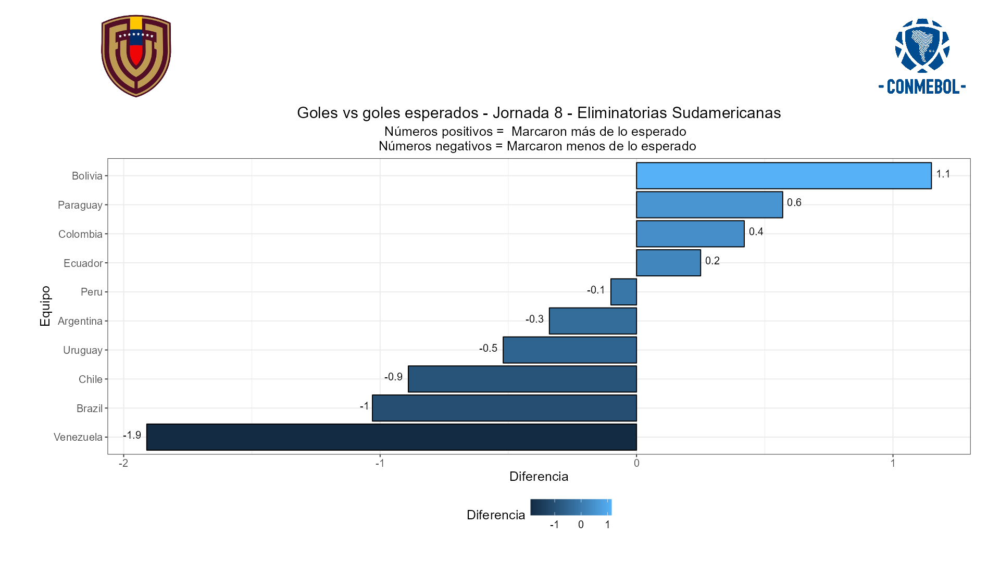
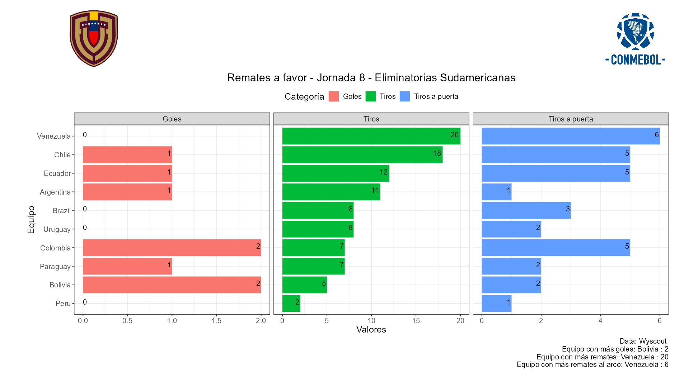
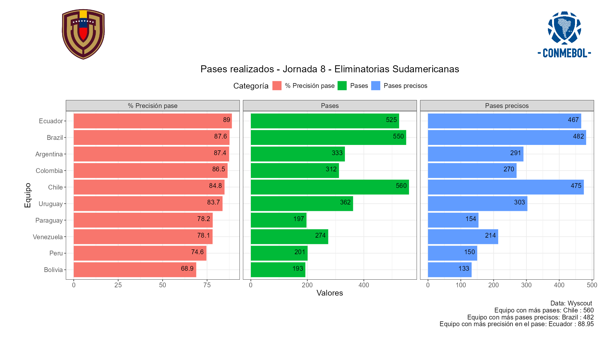
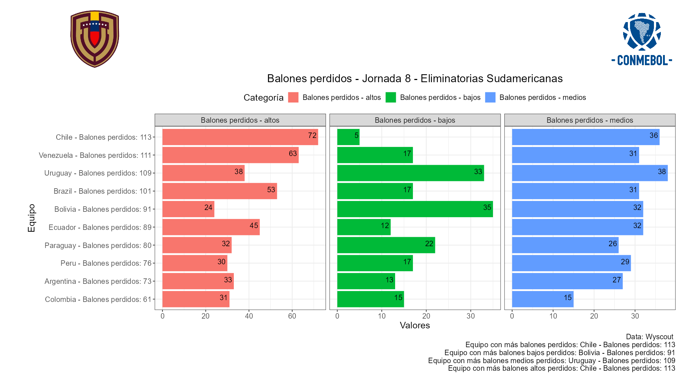
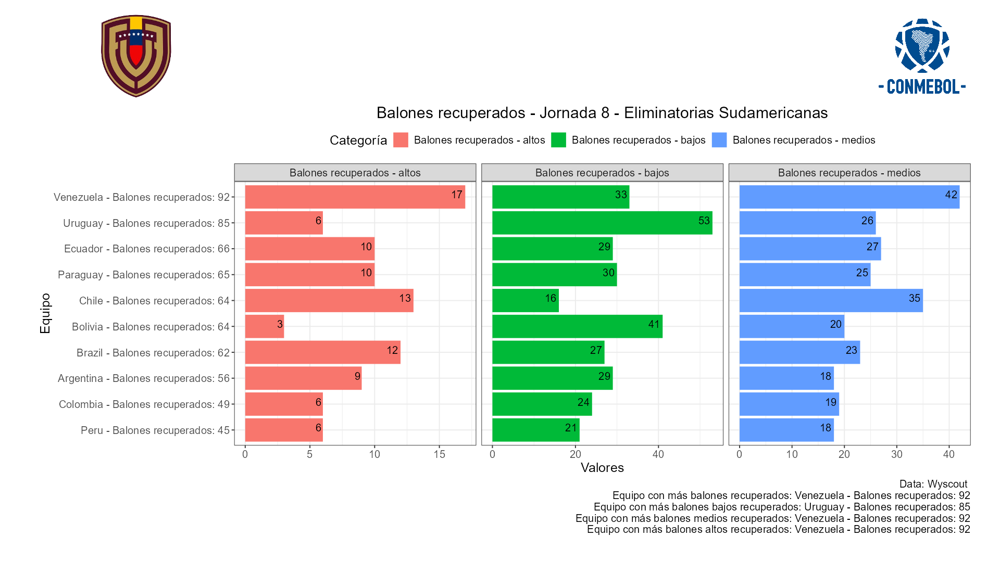
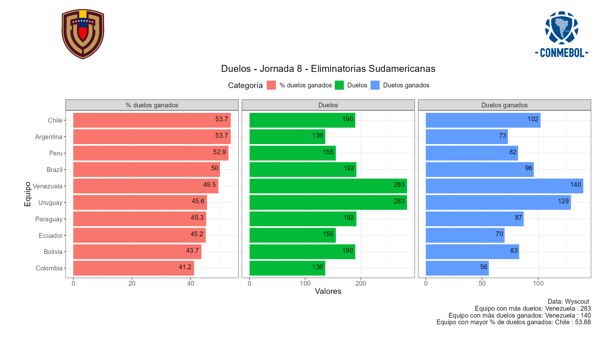

💡 Bolivia fue el equipo más efectivo de la jornada marcando un gol más de lo esperado. En total realizaron 5 remates, 2 de ellos fueron a portería y ambos fueron gol.
💡 Lamentablemente en esta ocasión Venezuela fue el menos efectivo marcando cero tantos y teniendo ocasiones claras para marcar al menos un gol. Cabe destacar que Venezuela fue el equipo que más remates realizó (20), 6 de ellos a portería.
💡 Chile por su parte fué el 2do equipo con más remates, 5 de ellos fueron al arco y anotaron un tanto. Perú por su parte solo remató dos veces, una fue a portería, no marcaron gol.
💡 Ecuador fue el equipo con mayor precisión en el pase (89%), mientras que Bolivia fue el menos preciso (68.9%) eso no le impidió llevarse una buena victoria de visitante 2 tantos a 1 frente a Chile.
💡 Chile fue el equipo con más balones perdidos (113), 72 en zona alta, 5 en zona baja y 36 en zona media. Colombia por el contrario contabilizó sólo 61 pérdidas de balón, 31 en zona alta, 15 en zona baja y 15 en zona media.
💡 Venezuela estuvo bien defensivamente hablando, fue el equipo con más balones recuperados 92, 17 de ellos en zona alta, 33 en zona baja y 42 en zona media. Por su parte Perú fue el equipo que menos balones recuperó con 45, 6 de ellos en zona alta, 21 en zona baja y 18 en zona media.
💡 Chile fue el equipo que ganó más duelos (102 de 190 posibles) teniendo así una efectividad del 53.7%.
